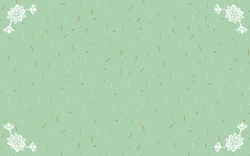
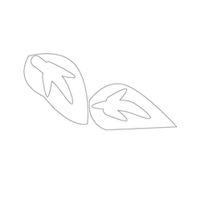
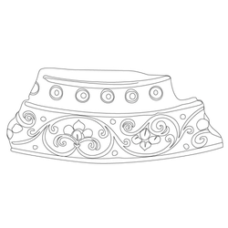
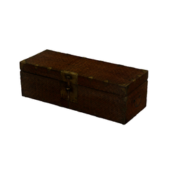
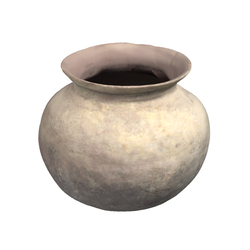
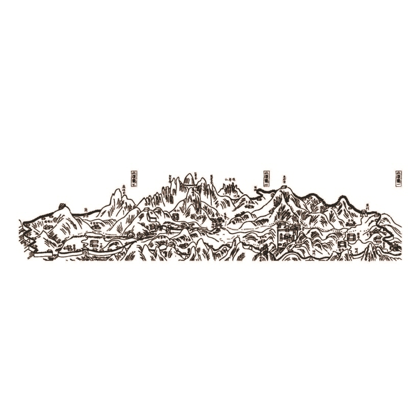
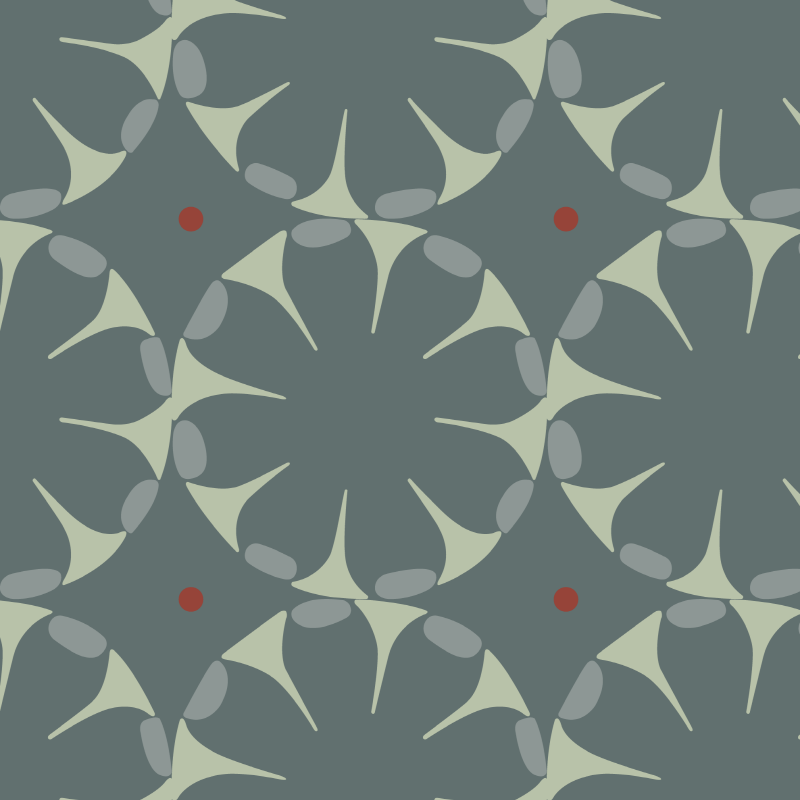
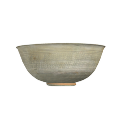
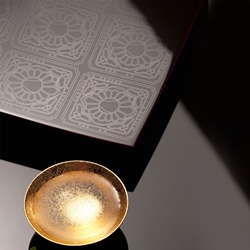
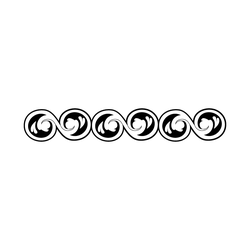

우리 한글날에 어울리는 문화 콘텐츠를 찾아보세요!
전통문양 이용안내
한국의 전통문양을 제품 디자인에 활용하여 실생활에 한국적인 느낌을 더할 수 있습니다.
전통 문양이 지닌 의미를 안내하고 어떻게, 제품에 활용할 수 있는지 확인할수 있습니다.
문양은 미적감각을 불러일으키기 위해 점이나 선, 색채를 도형과 같이 형상화한 것이라 할 수 있습니다.
전통문양 사용신청
전통문양사용신청
간단한정보 및사용용도 입력
콘텐츠다운로드
고유의 미감을 담고 있는 다양한 형태별, 용도별 전통문양을 활용해보세요










관련기관 안내